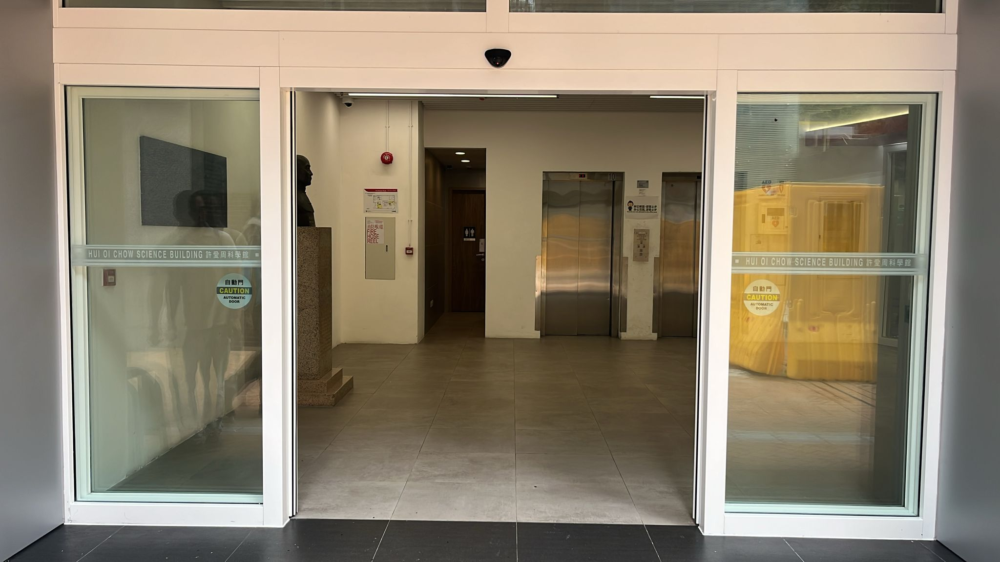
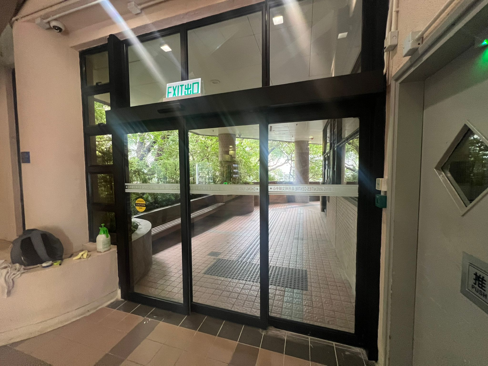
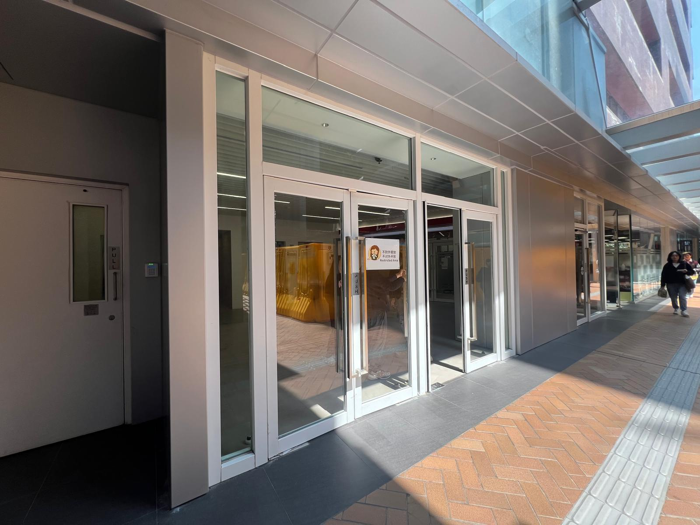
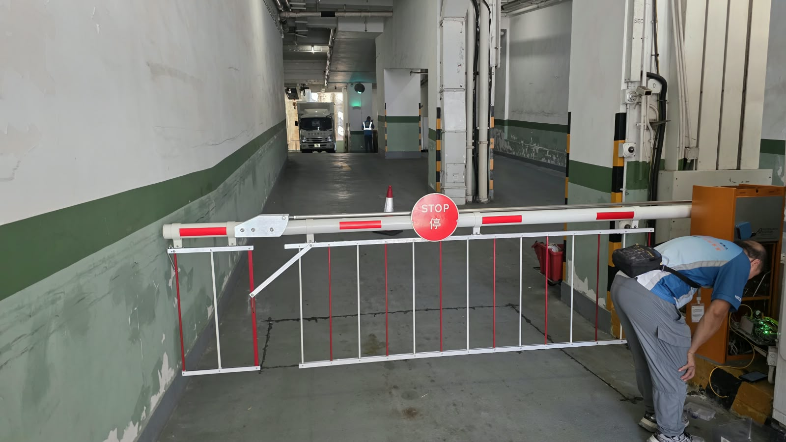
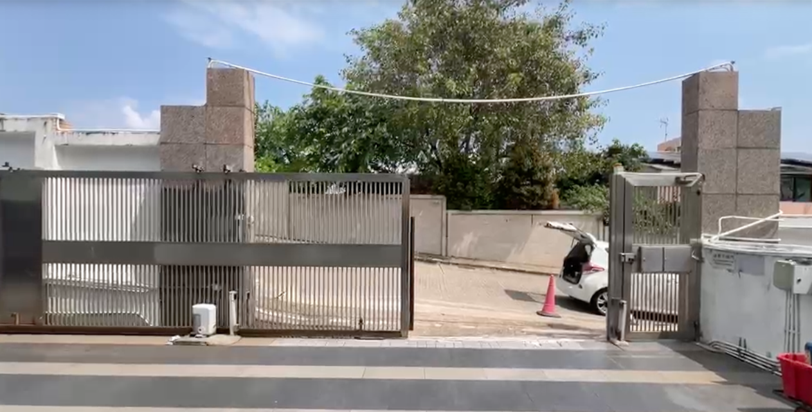
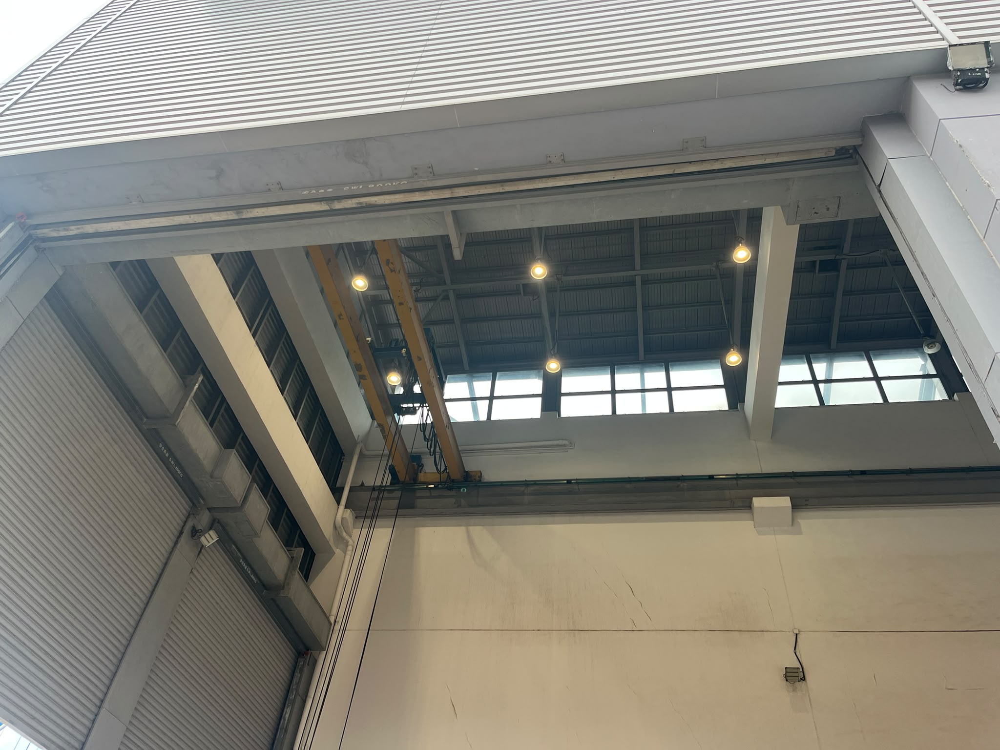

政府註冊電業承辦商 · 專業保養年檢、E-Call 緊急維修及出具安全檢查報告

自動門系統安裝與調校工程

大堂玻璃自動門系統維修及更換

符合消防規格之防火玻璃門組裝與安裝

停車場車閘系統更換及微調測試

屋苑出入電動大閘維修及馬達檢測

大型工業鋼捲閘維修及定期安全保養
| 工程年份 | 項目地點 / 機構名稱 | 工程內容撮要 | 狀態 |
|---|---|---|---|
| 2026 年 | 香港大學 (許愛周科學館) | 自動門安裝與系統調校工程 | 已竣工 |
| 2026 年 | 香港大學 (莊月明文娛中心) | 玻璃自動門更換與保養工程 | 已竣工 |
| 2026 年 | 香港大學 (校園設施) | 符合消防規格防火玻璃門安裝工程 | 已竣工 |
| 2026 年 | 亞皆老街 113 號 | 停車場自動車閘系統更換工程 | 已竣工 |
| 2026 年 | 夏威夷花園 | 住宅屋苑出入電動大閘維修工程 | 已竣工 |
| 2026 年 | 現代貨櫃碼頭 (Modern Terminals) | 大型工業鋼捲閘故障搶修與保養 | 已竣工 |
| 2025 年 | 帝湖居 | 住宅屋苑大型鐵閘專業維修 | 已竣工 |
| 2025 年 | 香港國際學校 / 大潭學校 | 安全路障系統與 Bollard 安裝工程 | 已竣工 |
| 2024 年 | 觀塘碼頭 | 液壓型專業電門機安裝工程 | 已竣工 |
| 2024 年 | 政府飛行服務隊 | 出入閘專用系統工程 (共 2 套) | 已竣工 |
| 2024 年 | 政府總部 (政總) | 更換及加長部份車閘系統工程 | 已竣工 |
| 2023 年 | 中華電力 (CLP 佐敦) | 電力設施專用吊卸閘機安裝 | 已竣工 |